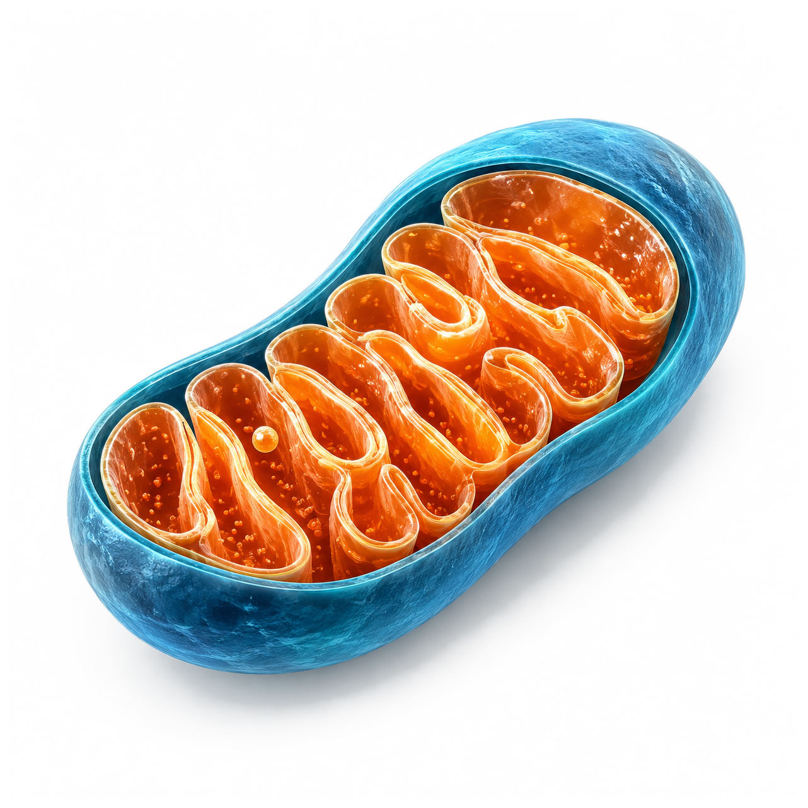
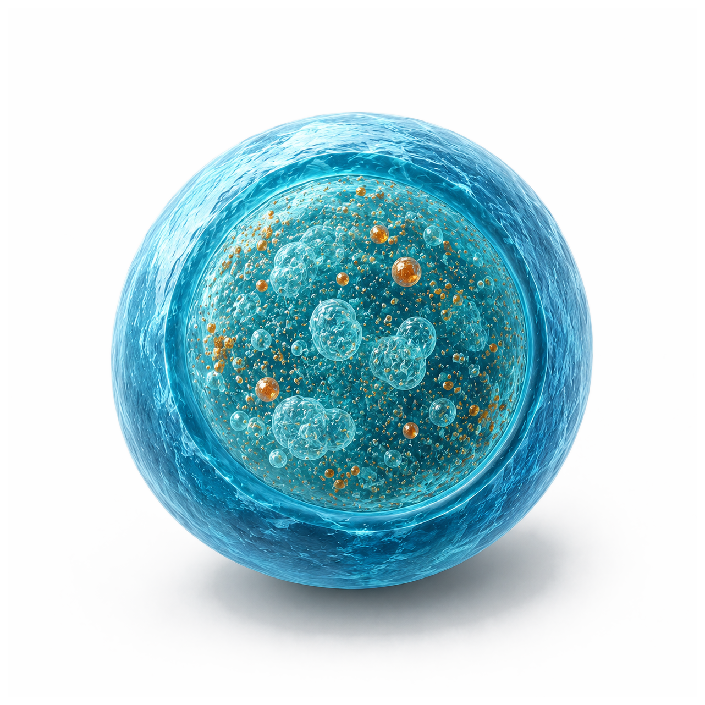
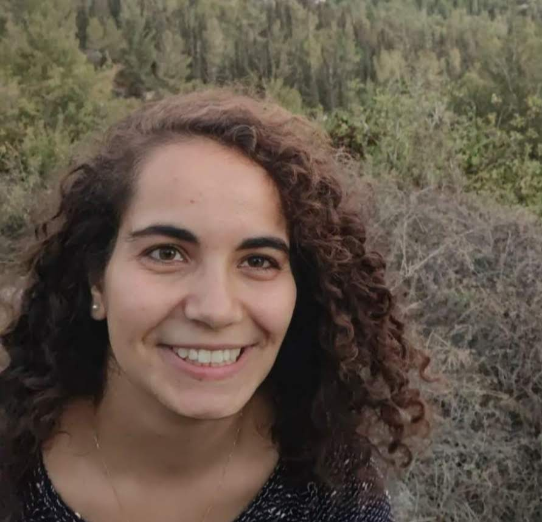

Mitochondrial stress & UPRmt
How mitochondrial dysfunction is sensed, how ATFS-1 and related pathways remodel cell physiology, and how stress responses influence mitochondrial recovery.
HEBREW UNIVERSITY OF JERUSALEM · FACULTY OF MEDICINE
We investigate how cells sense and adapt to mitochondrial and peroxisomal stress, how organelles communicate with one another, and how these pathways shape physiology, aging and disease.


Our research is supported by:
RESEARCH
Our work asks how mitochondrial and peroxisomal quality-control systems are coordinated and how this communication influences organismal physiology.
How mitochondrial dysfunction is sensed, how ATFS-1 and related pathways remodel cell physiology, and how stress responses influence mitochondrial recovery.
Peroxisomal protein import, proteostasis and quality control, including how cells respond when peroxisomal function or biogenesis is perturbed.
How stress in one organelle changes the abundance, function and behavior of another.
Using C. elegans and mammalian systems, we connect organelle homeostasis to development, aging and disease-relevant cellular states.
PEOPLE
A small group with a shared interest in organelles, stress biology and experiments that connect molecular mechanisms to physiology.

Principal Investigator
Lab Manager · photo coming later

PhD Student

MSc Student

MSc Student
JOIN US
We welcome inquiries from motivated MSc and PhD students, postdoctoral researchers and other scientists interested in organelle biology, stress responses, C. elegans, mitochondria or peroxisomes.
CONTACT
Department of Biochemistry & Molecular Biology · Faculty of Medicine · Hebrew University of Jerusalem.
Butner Building · First floor · Room 127
Hadassah Ein Kerem campus
Jerusalem 9112102 · Israel